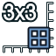

Silk SubGrid63 2Surf64
This documentation is not finished. Please help and contribute documentation.
GuiCommand model explains how commands should be documented. Browse Category:UnfinishedDocu to see more incomplete pages like this one. See Category:Command Reference for all commands.
See WikiPages to learn about editing the wiki pages, and go to Help FreeCAD to learn about other ways in which you can contribute.
|
Silk SubGrid63_2Surf64 |
| Menu location |
|---|
| Silk → SubGrid63_2Surf64 |
| Workbenches |
| Silk |
| Default shortcut |
| None |
| Introduced in version |
| - |
| See also |
| None |
Description
The Silk SubGrid63_2Surf64 command creates a multi corner sub-grid, a SubGrid63_2Surf64 object, from two blended edge surfaces meeting at a corner.


- Its main purpose is to close a gap surrounded by 3, 5, or 6 blended edge surfaces from blended edge grids by combining these sub-grids into one blended multi corner grid and finally a blended multi corner surface. (see

blended corner grid for gaps surrounded by 4 blended edge grids/surfaces)


A SubGrid63 corner piece built from two CubicSurface_64 surfaces


2 selected blended edge surfaces → Resulting corner sub-grid
Usage
- Select two blended edge surfaces
- There are several ways to invoke the command.
- A multi corner sub-grid, a SubGrid63_2Surf64 object, is created.
Properties
See also: Property View.
A multi corner sub-grid, a SubGrid63_2Surf64 object, is derived from a Part feature, or more precise a Part::FeaturePython object, and inherits all its properties. It also has the following additional properties:
Data
SubGrid63_2Surf64
- DataLegs (
Part::PropertyGeometryList): Poles. - DataSurf_0 (
Link): First reference 6X4 surface. - DataSurf_1 (
Link): Second reference 6X4 surface. - DataWeights (
FloatList): Weights.